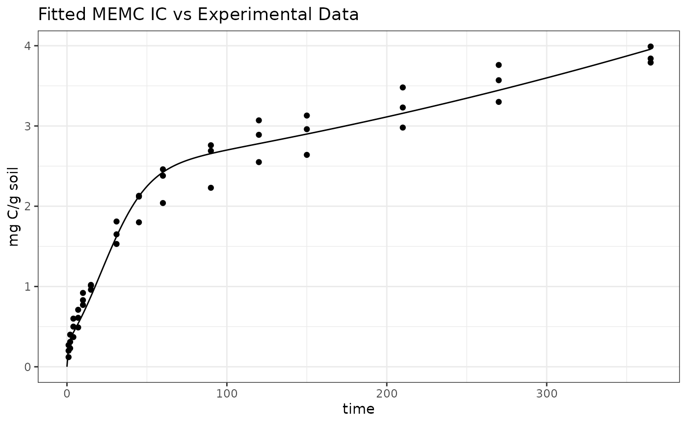
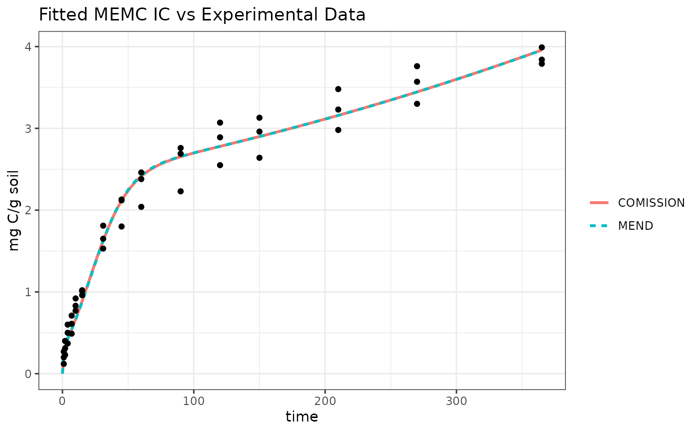
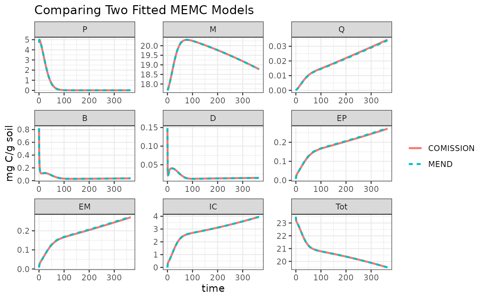

Fit to Data
dev-the-suggest-starting-params.RmdIn this example here we will show how to fit a MEMC model to experimental data.
library(MEMC)
# Packages used in this example
library(dplyr)
#>
#> Attaching package: 'dplyr'
#> The following objects are masked from 'package:stats':
#>
#> filter, lag
#> The following objects are masked from 'package:base':
#>
#> intersect, setdiff, setequal, union
library(ggplot2)
library(magrittr)
library(knitr)
# set a theme to use in all the plots
theme_set(theme_bw() + theme(legend.title = element_blank()))Load example experimental data provided within the package.
# Load example data we provided as internal package data.
comp_data <- read.csv(system.file("example/Ultisol_control.csv", package = "MEMC"))Fit MEND model to experimental data
The memc contains a function called memc_modfit that
helps users fit a model run to comparison data.
# Update the MEND model initial state conditions to reflect the experimental set up.
MEND_model$state <- c(P=4.71, M=17.67, Q=0, B=0.82, D=0.148, EP=0.0082, EM=0.0082, IC=0, Tot=23.484)
# Fit the the "maximum specific decomposition" parameters.
mend_fit <- memc_modfit(config = MEND_model, comp_data = comp_data, x = c(V.d=2, V.p=5, V.m=0.01))Run the model with the best parameter fits.
mend_out <- solve_model(MEND_model, 0:max(comp_data$time), params = mend_fit$par)
mend_out %>%
filter(variable == "IC") %>%
ggplot() +
geom_line(aes(time, value)) +
geom_point(data = comp_data, aes(time, IC)) +
labs(title = "Fitted MEMC IC vs Experimental Data",
y = "mg C/g soil")
Fit COMISSION model to experimental data
# Update the COMISSSION model initial state conditions to reflect the experimental set up.
COMISSION_model$state <- c(P=4.71, M=17.67, Q=0, B=0.82, D=0.148, EP=0.0082, EM=0.0082, IC=0, Tot=23.484)
# Fit the the "maximum specific decomposition" parameters.
comission_fit <- memc_modfit(config = COMISSION_model, comp_data = comp_data, x =c(V.d=2, V.p=5, V.m=0.01))Run the model with the best parameter fits.
comission_out <- solve_model(COMISSION_model, 0:max(comp_data$time), params = comission_fit$par)
comission_out %>%
filter(variable == "IC") %>%
ggplot() +
geom_line(aes(time, value)) +
geom_point(data = comp_data, aes(time, IC)) +
labs(title = "Fitted MEMC IC vs Experimental Data",
y = "mg C/g soil")Compare the different model configurations and fits
How different are the fitted parameter values for the two model configurations?
| name | V.d | V.p | V.m |
|---|---|---|---|
| MEND | 4.8978 | 31.3576 | 0.3833 |
| COMISSION | 4.7538 | 29.8273 | 0.3869 |
How different is the IC output?
bind_rows(mend_out, comission_out) %>%
filter(variable == "IC") %>%
ggplot() +
geom_line(aes(time, value, color = name, linetype = name), size = 1) +
geom_point(data = comp_data, aes(time, IC)) +
labs(title = "Fitted MEMC IC vs Experimental Data",
y = "mg C/g soil")
#> Warning: Using `size` aesthetic for lines was deprecated in ggplot2 3.4.0.
#> ℹ Please use `linewidth` instead.
bind_rows(mend_out, comission_out) %>%
ggplot() +
geom_line(aes(time, value, color = name, linetype = name), size = 1) +
labs(title = "Comparing Two Fitted MEMC Models",
y = "mg C/g soil") +
facet_wrap("variable", scales = "free")